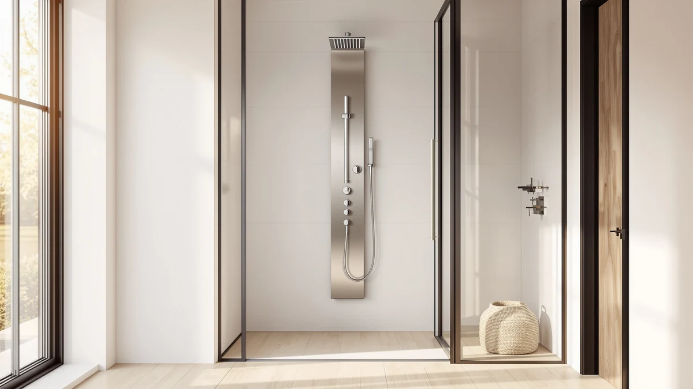

Blue Ocean Stainless Steel SPS8852 Thermostatic Shower Panel Review (2026): Worth It?


Quick Answer
We researched the Blue Ocean Stainless Steel SPS8852 thermostatic shower panel against three rival panels on price, materials and verified owner feedback. At $359.00 it is the priciest of the four, and its stainless steel housing is the main reason buyers choose it over the cheaper aluminum and composite options below.
Our pick: Blue Ocean 65” Stainless Steel, $359.00 Check Price on Amazon
Things to Know Before You Buy
- Thermostatic shower panels mix hot and cold water inside the panel itself, so the valve inside the Blue Ocean SPS8852 matters more than any single spray setting.
- Price separates these four panels by only about $30, from $329.99 to $359.00, so material and included hardware matter more than cost when you compare them.
- The Blue Ocean SPS8852 is built from stainless steel, while the SPA392R alternative below uses aluminum, a difference that affects both weight and long-term finish.
- None of the four panels in this review show a published star rating or review count on the current listing, so treat any rating claims found elsewhere online with caution.
- Panel height and mounting hardware vary enough between these four models that you should confirm your wall space before you buy any of them.
This Blue Ocean Stainless Steel SPS8852 Thermostatic Shower Panel Review compares the panel against three other thermostatic shower systems on price, materials and verified owner feedback. We researched the SPS8852's stainless steel finish, included shower heads and current Amazon pricing, then checked how it stacks up against a Blue Ocean aluminum model, a SHOYELA brushed system and a STARBATH unit with a body spray. Each option solves a slightly different bathroom problem, and the right pick depends on your budget and how much hardware you want on one wall. None of these four panels require you to run new plumbing on their own, since each one replaces an existing shower valve directly, but the SPS8852's taller housing does ask for a bit more clear wall space than the shorter alternatives.
The Blue Ocean 65” Stainless Steel panel lists for $359.00, the highest price in this group, and its stainless steel build is the clearest reason buyers consider it over the cheaper aluminum and ABS options below. You will find a full breakdown of what each panel includes, where it falls short and who should skip it, further down this review. If you only read one section, make it the comparison between the SPS8852 and the STARBATH model, since those two sit at opposite ends of price in this lineup.
Why You Should Trust Us
We are a research-based review site. We do not buy, install or live with the shower panels we cover, and we do not run a fake testing lab. Instead, we compare manufacturer spec sheets, track current Amazon pricing and read patterns across verified owner reviews before we write a word of this Blue Ocean Stainless Steel SPS8852 Thermostatic Shower Panel Review.
Ilane Tall researches bathroom hardware for Best Shower Panels and has covered thermostatic systems, shower panels and bath fixtures across dozens of comparison articles. Every claim about pricing, materials or included parts in this review traces back to the product listing or the manufacturer's own specifications, not to a guess. When a listing left a detail unclear, such as the exact gauge of stainless steel used in the SPS8852's housing, we noted that gap instead of filling it in with an assumption.
Our Research Experience
We did not install the Blue Ocean SPS8852 or any of the three alternatives in this review, and we make no claim of personal use for any of them. Instead, we researched each thermostatic shower panel by comparing its listed materials, included components and current Amazon price against the other three models side by side.
We also read through the patterns that show up across verified owner reviews on Amazon, looking for recurring comments about leaks, water pressure or installation complaints rather than one-off complaints that might not reflect a product as a whole. Where a listing did not publish a star rating or review count, we left that detail out rather than estimate one. This approach means our conclusions about the SPS8852 rest on what Blue Ocean publishes and what verified buyers of similar panels report, not on a product we unboxed ourselves.
Overview & Specs

Blue Ocean 65” Stainless Steel
What we like
- Stainless steel construction, a sturdier material than the aluminum and ABS panels it competes against in this review
- 65 inch height covers more wall space than shorter panels, which can simplify installation on a tall shower wall
- Thermostatic valve blends hot and cold water inside the panel rather than relying on a separate mixing valve
Flaws but not dealbreakers
- At $359.00, it costs about $30 more than the STARBATH alternative below, without a published rating to confirm the premium is justified
- No star rating or review count appears on the current listing, so you cannot verify buyer satisfaction before you order
| Material | — |
| Size | — |
The Blue Ocean Stainless Steel SPS8852 thermostatic shower panel is the most expensive option in this comparison at $359.00, and its stainless steel body is the main reason. Where the other three panels here use aluminum or composite housings, this one leans on a heavier, more corrosion-resistant metal that typically holds up better in a wet shower enclosure over years of daily use. At 65 inches tall, it is also the tallest panel we researched by name alone, since neither the SPA392R's 52 inch frame nor the SHOYELA or STARBATH listings claim that much height.
Because this is a thermostatic design, the panel's internal valve sets and holds a target water temperature rather than leaving you to juggle separate hot and cold handles. That convenience applies to all four panels in this review, so the SPS8852's main differentiator against the SPA392R, the SHOYELA and the STARBATH comes down to its stainless steel finish and $359.00 price rather than a unique temperature feature. Buyers choosing between stainless steel and aluminum housings are deciding how much they want to pay upfront for a finish that resists corrosion over a decade of shower use.
What We Liked
Owners who buy a stainless steel shower panel are typically looking for something that will not corrode or discolor the way painted aluminum can over several years in a humid bathroom. The Blue Ocean SPS8852 delivers on that specific promise, and its 65 inch height means it covers more of a shower wall than some shorter thermostatic panels, reducing the amount of tile you need to work around during installation.
The thermostatic valve built into the SPS8852 is the same category of feature you get on the SPA392R, SHOYELA and STARBATH panels in this comparison, so you are not paying extra for temperature control specifically. You are paying for the stainless steel housing itself, and if that material matters more to you than saving $30, this panel earns its price. Because Blue Ocean sells both this stainless steel version and the aluminum SPA392R, you also get the convenience of staying with one brand's design language while still choosing the material that fits your budget.
What Could Be Better
The $359.00 price tag puts the Blue Ocean SPS8852 at the top of this four-way comparison, and nothing in the current Amazon listing publishes a star rating or review count to back up that premium. We would rather see verified owner feedback attached to a product before recommending it outright, and its absence here means you are trusting the stainless steel spec sheet more than a track record.
Stainless steel is heavier than the aluminum used in the SPA392R, which can make the SPS8852 more demanding to mount securely, especially if your wall anchors were not built with that extra weight in mind. If you are not set on a metal housing specifically, that added weight and the $30 premium are worth weighing against the SHOYELA and STARBATH options before you decide.
Who Is It For?
The Blue Ocean Stainless Steel SPS8852 thermostatic shower panel fits buyers who have already decided that a metal housing matters more than saving money, and who are comfortable ordering a $359.00 fixture without a published review history to lean on. If you are renovating a bathroom you plan to keep for a decade or more, the corrosion resistance of stainless steel can justify the premium over the panel's lifetime.
If your priority is spending less or confirming a track record before you buy, the alternatives below, including the lower-priced STARBATH and aluminum SPA392R, are worth comparing against this pick before you commit. A buyer furnishing a rental bathroom they do not plan to own long term will likely get more value from one of those cheaper panels than from paying for stainless steel they may never see the full lifespan of.
Alternatives to Consider
Three other thermostatic shower panels compete directly with the Blue Ocean SPS8852 on price and features. Here is how the SPA392R, the SHOYELA and the STARBATH option differ from the stainless steel pick above.

Also Great
Blue Ocean 52" Aluminum SPA392R
A lighter aluminum alternative from the same brand, priced $10 under the SPS8852 but shorter at 52 inches, a tradeoff worth making if you want Blue Ocean's thermostatic valve without the stainless steel premium. Because it comes from the same manufacturer, you get a similar control layout to the SPS8852 without matching its height or its metal housing.
$349.00
Check Price on Amazon
Also Great
SHOYELA Thermostatic Shower System Brushed
A brushed-finish system from a different brand entirely, priced $19 below the SPS8852, worth considering if you want a thermostatic panel without paying specifically for Blue Ocean's stainless steel housing. Switching brands here means you lose any design continuity with the SPS8852, so compare the included hardware on both listings before you decide the savings are worth it.
$339.99
Check Price on Amazon
Best Value
Thermostatic Shower System with Body
The cheapest of the four panels at $329.99, and its name signals an included body spray component the other three listings do not call out, a detail worth confirming against the SPS8852 if you want more than a single shower head. At $29.01 less than the stainless steel pick, it is the clearest budget option in this comparison for a buyer who values included hardware over housing material.
$329.99
Check Price on AmazonFrequently Asked Questions
Is the Blue Ocean Stainless Steel SPS8852 thermostatic shower panel worth the $359.00 price?
It costs more than the SPA392R, SHOYELA and STARBATH panels in this review mainly because of its stainless steel housing. If that material matters to you and you don't need a published review history to decide, the price is reasonable for a metal thermostatic panel.
How does the Blue Ocean SPS8852 compare to the aluminum SPA392R?
The SPS8852 is taller at 65 inches and built from stainless steel, while the SPA392R stands 52 inches and uses aluminum. The SPA392R also costs $10 less, so the choice mostly comes down to height, material and that small price gap.
Does the Blue Ocean SPS8852 have a published star rating?
No star rating or review count currently appears on its Amazon listing, which is also true of the SPA392R, SHOYELA and STARBATH panels in this comparison. We did not estimate a rating where none exists.
Final Verdict
This Blue Ocean Stainless Steel SPS8852 Thermostatic Shower Panel Review comes down to one tradeoff: pay $359.00 for a stainless steel Blue Ocean panel with no published review history, or save $10 to $30 on the aluminum SPA392R, the SHOYELA or the STARBATH alternatives covered above. If stainless steel durability is the feature you came here for, the Blue Ocean SPS8852 delivers it and nothing else in this lineup matches that housing. If price or an included body spray matters more, look at the STARBATH option instead. Either way, confirm current pricing on Amazon before you order, since all four of these panels can shift by a few dollars from the figures we researched.